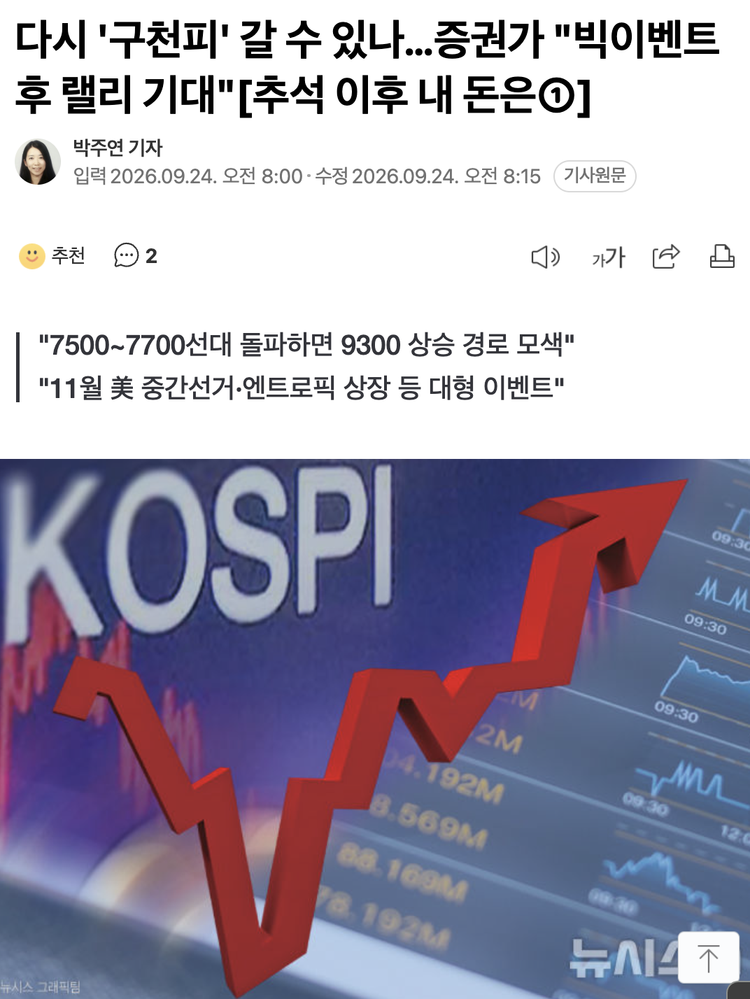
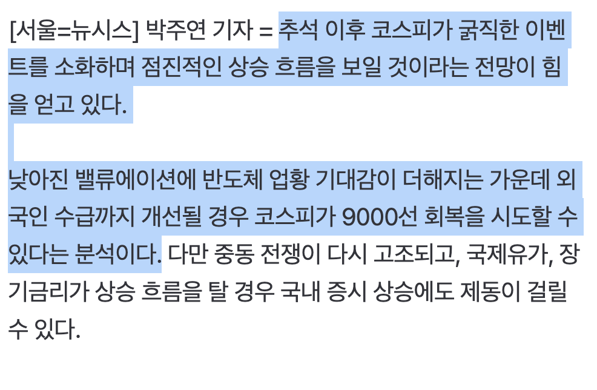
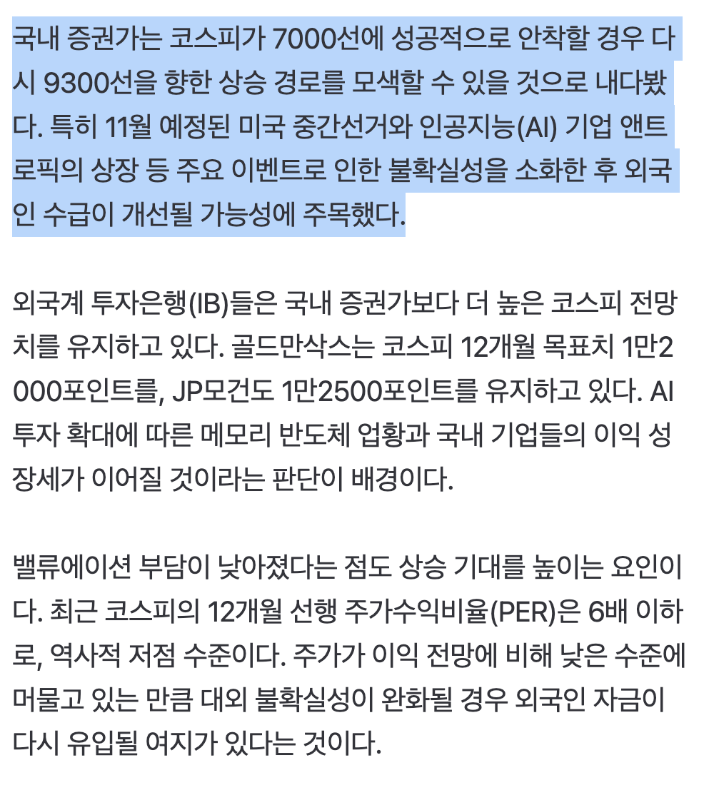
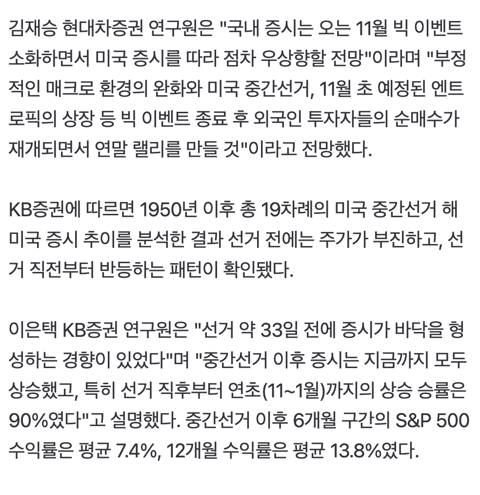
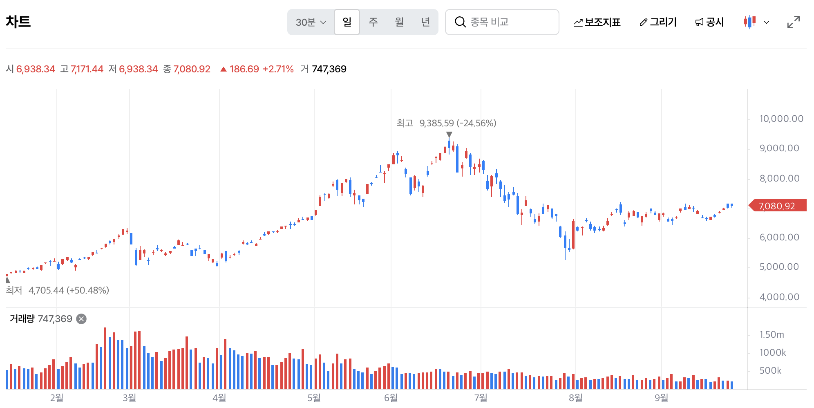

https://n.news.naver.com/mnews/article/003/0014211921

국내 증권가: 코스피가 7000선에 성공적으로 안착할 경우 다시 9300선을 향한 상승 경로를 모색할 수 있다
코스피 12개월 목표치
골드만삭스: 1만2000포인트
JP모건: 1만2500포인트
코스피 fPER = 6 -> 역사적 저점수준
참고: 📈 “연휴 끝나면 주가 오른다” 22번 중 15번…이번에도 통할까?
우리나라 전쟁터지는거 아닌 이상 우상향은 당연한거임
그냥 최저점이다 싶었을때 들어가서 묵히면 되는거